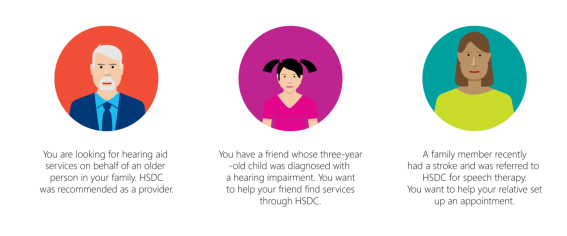
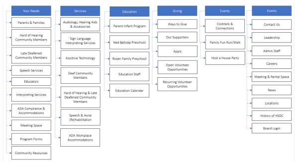
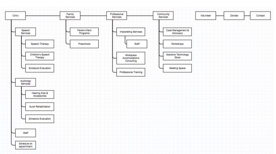
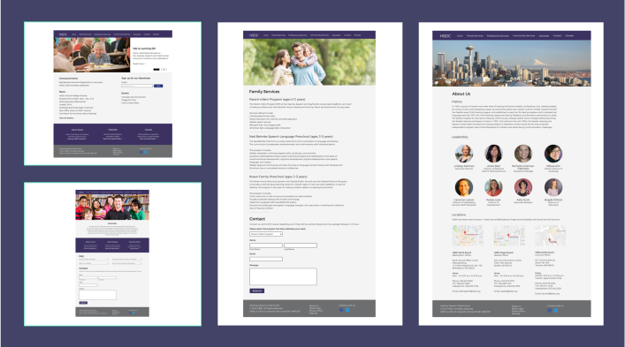
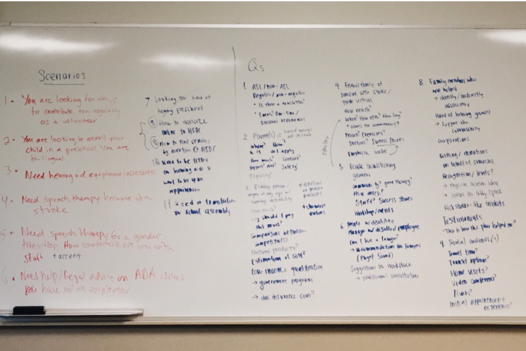

Hearing, Speech & Deaf Center Redesign
Role: Project Manager and Design Lead
The Microsoft.com team partnered with the Philanthropies team to help the Hearing, Speech & Deaf Center of Puget Sound with their marketing and brand awareness, as well as with their current process of collecting feedback from customers. We started this project in October 2016, with a projected deadline of March 2017 in time for the center's 80th anniversary.
I was tasked with managing a team of volunteers from across the company. Based on the skills of the volunteers, I created teams for marketing, research & data, and design & development. As part of the project, I led the design and development team to work on a redesign of their current website.
We initially spoke with the team regarding some of the issues they were having on their end in terms of how they maintained the website. When they let an agency work on it, the agency made it very hard for anyone that's non-technical to make edits. The result of this is that they haven't been able to make major edits to the website as needed.
The first task I gave the team was to explore the website (as of 11/25/16) and think of how to go about restructuring their IA. The website at the time made it difficult to find services and how to contact the center for respective services.
The best way of doing this was to first try and figure out everything they offered.

While we did our own audit of the website, we also conducted initial user tests on the website and tried gathering any data that the center could provide to us.
We used different scenarios to put users in a certain frame of mind while we were testing.
{kind=link}
Their data from Google Analytics told us that most people initially came to the page to find out more on how to volunteer and learn more about the servies they offer. During that process, we also saw that their "404" page was the fifth most visited page overall on their site - never a good sign. From there, three-fifths of the top pages visited after were related to contacting the center.
From what we observed and the feedback we collected, we realized that the website wasn't serving its purpose. From personal observation, there was so much content to wade through - we were drowning in content. The user testing we did helped us understand that people - especially those who are seeking help for hard of hearing or deafness - want other options other than calling to contact a place. People in our user studies used the search bar and were given 404 pages. They also found the content on the sides very distracting and far from accessible.
Problem:
Website visitors have a hard time finding what they want on the website and leave because of the overwhelming amount of content.
Solution:
Bring awareness and educate visitors of the center's services with an easy-to-navigate website and succinct, informative copy.
Using this information, we began to dig our heels into the IA based on the content auditing we were doing.
This was the IA for the website at the time...
{kind=link}
... and this was the new IA we came up with, with revisions to come later.
{kind=link}
I had scheduled a project presentation with the center in December, and encouraged team members to get creative and come up with mid-fi comps in order to get reactions and elicit feedback from the center's leadership team. Using the center's recently revamped brand guidelines which had Montserrat as their font of choice (free and available for use via Google Fonts) as well as a set color palette.
For my section of the website, I wanted to clearly present information. At this stage, I didn't want to add anything complicated or sexy. Visitors were mostly looking to find more information, contact someone at the center, and/or set up an appointment. Utility was my main focus here.
{kind=link}
{kind=link}
{kind=link}
{kind=link}
From the presentation, the directors really liked the direction we were headed in, and were looking forward to seeing progress during our next update. They did mention that we didn't have to follow their branding guidelines religiously, so had a bit more creative flexibility and freedom on the UI front. Not wanting to lose any time, we got together again for a brainstorming/work session the same week to think more about scenarios and user flows.
{kind=link}
This project is still in progress, ending in March 2017.